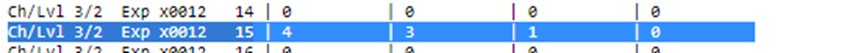
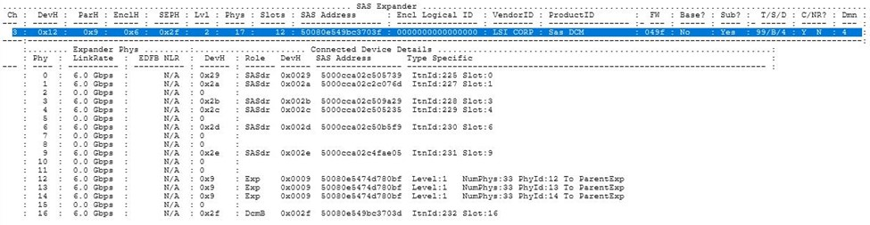
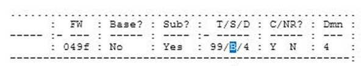

A drawer in the Tray Has Become Degraded
- Check the reason for degraded: Disk failures, SAS connections, loss of redundancy etc.
- Go to the Hardware section and check both front and back for any failure or warnings
- Check State Capture Data > sasStateCapture > sasShowAllExpanders > Error Statistics for Expander Phys:
You may get something similar if an issue:

Now, based on above details check Channel 3 Level 2 0x12 Hex to get the exact location.


Which shows B Side
Reset SAS Statistics
- reset storagearray SASPHYBaseline;
- clear allDriveChannels stats;
Additional Information
Degraded Drawer
Note: Drawer replacements can be done either Offline or Online. Check Drawer loss protection status.